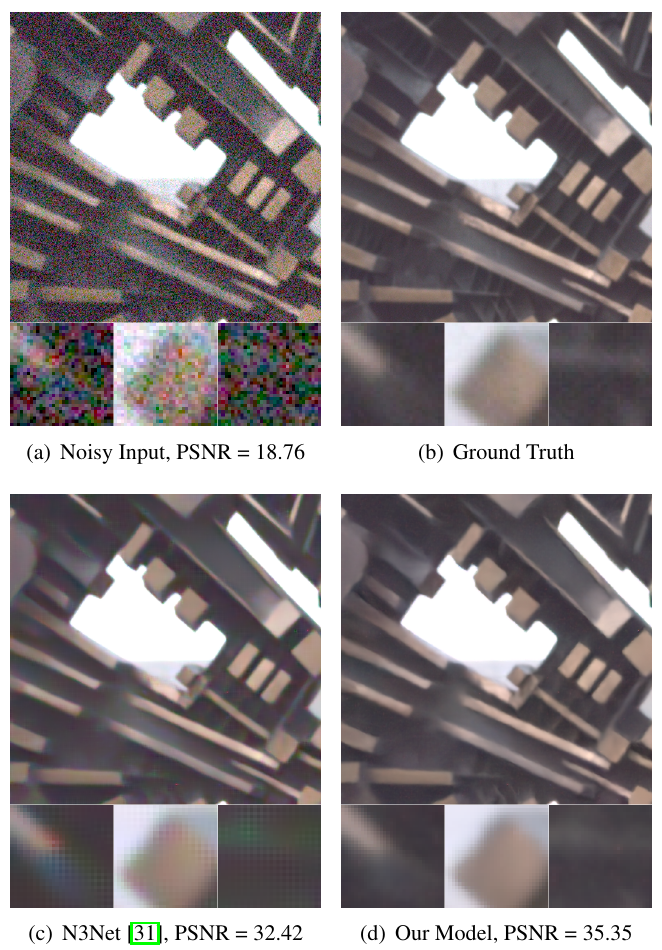
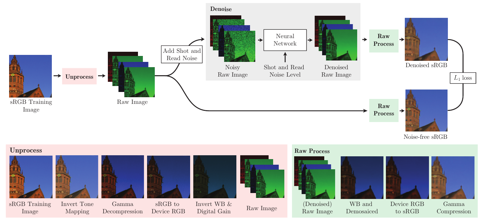
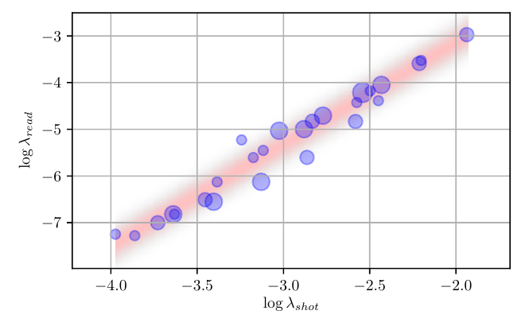
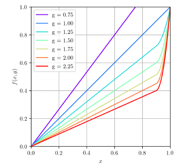
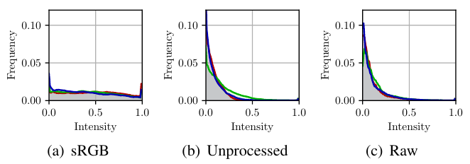
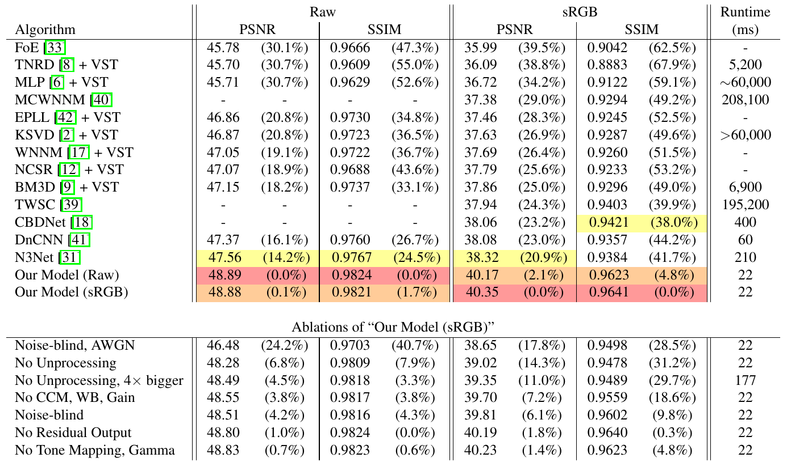

论文
Unprocessing：把网上的 sRGB 照片逐步「逆 ISP」回 RAW，造出逼真的去噪训练对

代码来源说明：官方实现最初放在
google-research/google-research单体仓库的unprocessing/目录（README 里的命令行写的是/google-research$ python -m unprocessing.train），后来一作在timothybrooks/unprocessing单独放了一份。我把两份逐文件 diff 过：差异只有版权年份和import tensorflow.compat.v1 as tf这类 TF2 兼容改动，算法完全一样。下文引用的是timothybrooks/unprocessing（commit9928956）的行号，repo/即这份克隆。
专项定位：这篇放在「手机照片 → 相机画质：细节与质感迁移」专项里读。它本身是 RAW 去噪论文，对专项有用的地方在两件事：一是逐步逆 ISP、把 sRGB 变回 RAW 来批量造配对数据；二是按 ISO 联合采样参数的泊松-高斯噪声模型。§6 专门讨论这两点能怎么挪到「iPhone Bayer RAW → 目标相机效果」上，以及挪过去会在哪里失效。
1. 出发点：深度去噪输给 BM3D，问题出在训练数据
2017 年的两个真实噪声基准（RENOIR、Darmstadt DND）让人很难堪：在真实相机 RAW 上，用合成数据训练的深度去噪网络经常打不过 BM3D 这类手工方法。作者的诊断是合成训练数据不像真 RAW，而且不像的地方不只是噪声。
- 噪声模型不对：大量工作默认噪声是加性、白、高斯（AWGN），真实传感器噪声却是信号相关的：越亮的地方方差越大（shot noise），另有一个和信号无关的底噪（read noise）。
- ISP 被忽略了（本文的主要切入点）：即使噪声模型对了，训练图像本身也是 sRGB，已经过 tone mapping、gamma、色彩矩阵、白平衡、数字增益。真 RAW 是线性的、偏暗的、偏绿的（白平衡前 R/B 通道被压低），直方图挤在暗部（图 5c）。直接把 sRGB 当 RAW 用，网络看到的强度分布、通道间相关性都和测试时不一样。
- 真实配对数据太贵：SIDD、SID 这类工作用同一台相机拍长短曝光对来训练，但需要三脚架、静态场景、对齐和光照校正；换一个传感器就得重拍。水面、树叶、动物这类有微小运动的场景根本拍不了。
所以论文的思路是：传感器物理和 ISP 各步骤都是已知的，只要拿到目标相机的几个基本参数（CCM、白平衡增益范围、噪声参数分布），就能把任意一张网上的照片变成「看起来像这台相机拍的 RAW」的训练对。
ISP
Image Signal Processor，相机把传感器原始读数变成好看 JPEG 的整条处理流水线。
Bayer / RGGB 马赛克
每个像素只装一种颜色滤镜，2×2 一组按 红-绿-绿-蓝 排列，所以 RAW 每个位置只有一个颜色值。
Demosaic（去马赛克）
从马赛克插值出每个像素的完整 RGB；本文和 DND 都用最朴素的双线性插值。
Shot noise
光子到达的随机性，泊松分布，方差正比于信号强度：越亮噪声绝对值越大。
Read noise
读出电路的误差，近似零均值高斯、方差固定，与信号无关，暗部主要是它。
CCM
Color Correction Matrix，3×3 矩阵，把「相机自己的 RGB」转到标准 sRGB 原色。
白平衡 / 数字增益
给 R、B 通道各乘一个增益让白色变白；再给全图乘一个亮度增益（自动曝光决定）。
Tone mapping / Gamma
先用 S 形曲线压对比度，再用 x^(1/2.2) 把线性光强压成更符合人眼的编码值。
DND
Darmstadt Noise Dataset：4 台消费相机 50 张真实高 ISO 图，真值不公开，只能在线提交评测，很难过拟合。
VST
Variance Stabilizing Transform（如 Anscombe），把信号相关噪声变成近似等方差高斯，让 AWGN 去噪器能用。
2. 方法：逆 ISP 造数据 + 在 sRGB 空间算损失

整套方法可以用一句话概括：训练时让数据「从 RAW 侧进入，从 sRGB 侧出来」，和测试时真实相机的数据路径一致。下面按论文 §3 的顺序过一遍每个步骤和它的逆。
2.1 噪声模型：泊松-高斯近似成异方差高斯
—— 翻译: 观测值 y 以真实亮度 x 为中心抖动，抖动的方差分两份，一份是固定的底噪 λ_read，另一份随亮度线性增长 λ_shot·x。shot noise 本来是泊松分布，这里用均值、方差都匹配的高斯来近似。
—— 翻译: 两个参数都由增益决定：数字增益 g_d 把读出噪声按平方放大，模拟增益 g_a 与数字增益相乘决定 shot 部分的斜率。ISO 调高就是把这些增益调大，所以 λ_shot 和 λ_read 会一起变大，两者强相关。
类比：拿一个漏斗接雨（光子）。雨点落进来的数量本身是随机的，接得越多，绝对波动越大（shot）；称重用的秤自己有误差，和接了多少雨无关（read）。把读数放大 g 倍（ISO 提高），两种误差也跟着被放大。
数值例子：取一个中等 ISO，λ_shot = 0.004、λ_read = e^{2.18·ln 0.004 + 1.2} ≈ 1.9×10⁻⁵。在暗部 x = 0.01 时，σ² ≈ 1.9×10⁻⁵ + 4×10⁻⁵，σ ≈ 0.0077，相对噪声 77%；在亮部 x = 0.5 时，σ ≈ 0.045，相对噪声只有 9%。这就是为什么暗部去噪最难，也是为什么 AWGN（全图同一个 σ）会在暗部欠去噪、亮部过平滑。
参数怎么取？DND 的元数据里每张图都有标定好的 (λ_shot, λ_read)。作者把它们画在 log-log 坐标上（图 3），发现几乎落在一条直线上，于是拟合出一个联合采样分布：
—— 翻译: 先在对数尺度上均匀地选一个 ISO 档位（λ_shot），再按那条拟合直线算出对应的 read noise，加一点高斯抖动（σ=0.26）模拟不同机身、不同图之间的散布。这样采出来的噪声对，落在真实相机能出现的区域里，不会出现「shot 很大但 read 极小」这种物理上不存在的组合。

代码和公式一一对应，log-log 直线的系数 2.18、1.20、0.26 直接写死在里面：
repo/unprocess.py:L150-L167 — Eq 3 的噪声参数联合采样 + Eq 1 的异方差高斯加噪
def random_noise_levels():
"""Generates random noise levels from a log-log linear distribution."""
log_min_shot_noise = tf.log(0.0001)
log_max_shot_noise = tf.log(0.012)
log_shot_noise = tf.random_uniform((), log_min_shot_noise, log_max_shot_noise)
shot_noise = tf.exp(log_shot_noise)
line = lambda x: 2.18 * x + 1.20
log_read_noise = line(log_shot_noise) + tf.random_normal((), stddev=0.26)
read_noise = tf.exp(log_read_noise)
return shot_noise, read_noise
def add_noise(image, shot_noise=0.01, read_noise=0.0005):
"""Adds random shot (proportional to image) and read (independent) noise."""
variance = image * shot_noise + read_noise
noise = tf.random_normal(tf.shape(image), stddev=tf.sqrt(variance))
return image + noise
add_noise 里方差用的是干净图 image，这才是物理上正确的 σ²(x)。但网络推理时拿不到干净图，所以喂给网络的噪声水平图用的是噪声图近似（见 2.4 的 dataset.py:L67）。
2.2 逆 ISP 五步：每一步怎么反过来
正向 ISP 的顺序是：马赛克 RAW →（白平衡 + 数字增益）→ 去马赛克 → CCM → gamma → tone mapping → sRGB。Unprocess 严格倒着走。
(a) 逆 tone mapping。真实相机的色调曲线是专有的，还可能是局部的（edge-aware），没法逆。作者假设它是一条全局的 smoothstep：
—— 翻译: smoothstep 是一条在 [0,1] 上的 S 形曲线，压暗部和高光、拉中间调；它的反函数是一个三次方程的解析根，可以写成 sin/arcsin 的闭式。逆过来就是把中间调的对比度还回去。
代码 repo/unprocess.py:L72-L75 是这个闭式的直接翻译：0.5 - tf.sin(tf.asin(1.0 - 2.0 * image) / 3.0)。
(b) 逆 gamma：Γ⁻¹(y) = max(y, ε)^{2.2}，ε = 10⁻⁸ 防止 0 附近梯度爆炸（repo/unprocess.py:L78-L81）。
(c) 逆 CCM：DND 有 4 台相机，各有一个固定的 XYZ→Camera 矩阵。为了让模型对这 4 台都适用，每张训练图随机取这 4 个矩阵的一个凸组合，乘上标准的 sRGB→XYZ 矩阵，得到 sRGB→Camera 矩阵：
repo/unprocess.py:L44-L69 — 随机 CCM（4 台相机矩阵的凸组合 + 行归一化）与随机白平衡/亮度增益
num_ccms = len(xyz2cams)
xyz2cams = tf.constant(xyz2cams)
weights = tf.random_uniform((num_ccms, 1, 1), 1e-8, 1e8)
weights_sum = tf.reduce_sum(weights, axis=0)
xyz2cam = tf.reduce_sum(xyz2cams * weights, axis=0) / weights_sum
# Multiplies with RGB -> XYZ to get RGB -> Camera CCM.
rgb2xyz = tf.to_float([[0.4124564, 0.3575761, 0.1804375],
[0.2126729, 0.7151522, 0.0721750],
[0.0193339, 0.1191920, 0.9503041]])
rgb2cam = tf.matmul(xyz2cam, rgb2xyz)
# Normalizes each row.
rgb2cam = rgb2cam / tf.reduce_sum(rgb2cam, axis=-1, keepdims=True)
return rgb2cam
def random_gains():
"""Generates random gains for brightening and white balance."""
# RGB gain represents brightening.
rgb_gain = 1.0 / tf.random_normal((), mean=0.8, stddev=0.1)
# Red and blue gains represent white balance.
red_gain = tf.random_uniform((), 1.9, 2.4)
blue_gain = tf.random_uniform((), 1.5, 1.9)
return rgb_gain, red_gain, blue_gain
论文没写的一个细节在第 57 行：每一行归一化到和为 1。这样 rgb2cam 把 (1,1,1) 映射到 (1,1,1)，也就是说 CCM 只负责「色彩混合」，不改变白点；白点的偏移完全交给下一步的白平衡增益。这和 DNG 规范里把 ColorMatrix 与 AsShotNeutral 分开存储是同一个思路。另外 xyz2cams 存的是 XYZ→Camera 方向的矩阵，和 DNG ColorMatrix 标签的方向约定相同，所以换相机时可以直接填 DNG 里读出的矩阵。
(d) 逆白平衡 + 数字增益（带高光保护）。数字增益 g 的分布来自一个巧妙的统计论证：假设真实 RAW 与合成 RAW 的亮度都服从指数分布 p(x;λ)=λe^{-λx}，λ 的极大似然估计就是样本均值的倒数，所以两组数据的样本均值之比就是要乘的缩放。作者在 DND 上算出这个比值是 1.25，于是逆增益 1/g ~ N(0.8, 0.1)。白平衡增益直接从 DND 元数据的经验范围均匀采样：红 [1.9, 2.4]、蓝 [1.5, 1.9]。
问题在于逆增益几乎总小于 1，直接除下去，原本过曝的白色会变成 0.4 左右的灰，合成数据里就几乎没有饱和像素，网络学不会处理高光。于是作者设计了一个在高光处平滑过渡到恒等映射的函数：
—— 翻译: 亮度低于 0.9 时 α=0，就是普通的除以增益；高于 0.9 后 α 按二次方从 0 涨到 1，输出从「除以增益」平滑地滑到「保持原值」，所以纯白 x=1 仍然映射成 1（依然饱和）。外层 max 保证 g≤1（反而要提亮）时不会被这个混合压暗。

repo/unprocess.py:L92-L102 — Eq 5–6 的高光保护逆增益
def safe_invert_gains(image, rgb_gain, red_gain, blue_gain):
"""Inverts gains while safely handling saturated pixels."""
gains = tf.stack([1.0 / red_gain, 1.0, 1.0 / blue_gain]) / rgb_gain
gains = gains[tf.newaxis, tf.newaxis, :]
# Prevents dimming of saturated pixels by smoothly masking gains near white.
gray = tf.reduce_mean(image, axis=-1, keepdims=True)
inflection = 0.9
mask = (tf.maximum(gray - inflection, 0.0) / (1.0 - inflection)) ** 2.0
safe_gains = tf.maximum(mask + (1.0 - mask) * gains, gains)
return image * safe_gains
和 Eq 6 对照：代码把 f 写成了「乘一个安全增益」的形式，(1−α)·(1/g) + α·1 正是 Eq 6 第二项除以 x。区别在于 α 用的是三通道均值 gray，而不是每个通道自己的 x（第 98 行）。效果是三个通道共用同一个 mask，近白像素的 R/G/B 一起回到饱和，不会出现只有某一通道饱和导致的色偏。这是论文公式里没有写出来的选择，§4 会再提。
(e) 抽马赛克：每个 2×2 块只留 R、Gr、Gb、B 各一个值，打包成半分辨率 4 通道张量（repo/unprocess.py:L105-L115）。
完整的逆 ISP 只有十几行，顺序和图 2 粉色框完全一致：
repo/unprocess.py:L118-L147 — unprocess() 主函数：采样元数据 → 五步逆 ISP → 返回 RAW 和元数据
def unprocess(image):
"""Unprocesses an image from sRGB to realistic raw data."""
with tf.name_scope(None, 'unprocess'):
image.shape.assert_is_compatible_with([None, None, 3])
# Randomly creates image metadata.
rgb2cam = random_ccm()
cam2rgb = tf.matrix_inverse(rgb2cam)
rgb_gain, red_gain, blue_gain = random_gains()
# Approximately inverts global tone mapping.
image = inverse_smoothstep(image)
# Inverts gamma compression.
image = gamma_expansion(image)
# Inverts color correction.
image = apply_ccm(image, rgb2cam)
# Approximately inverts white balance and brightening.
image = safe_invert_gains(image, rgb_gain, red_gain, blue_gain)
# Clips saturated pixels.
image = tf.clip_by_value(image, 0.0, 1.0)
# Applies a Bayer mosaic.
image = mosaic(image)
metadata = {
'cam2rgb': cam2rgb,
'rgb_gain': rgb_gain,
'red_gain': red_gain,
'blue_gain': blue_gain,
}
return image, metadata
注意它返回了元数据。这些随机采样出来的 CCM 和增益一路传到损失函数，保证网络输出被「同一台虚拟相机」重新处理。这是把「数据合成」和「损失定义」耦合起来的关键。

2.3 损失：在处理后的 sRGB 空间算 L₁
—— 翻译: x 是干净伪 RAW，ỹ 是加噪后的输入，σ̂² 是噪声方差图，m 是这张图采样出来的相机元数据。网络 f_θ 在 RAW 域去噪，但误差在「同一套元数据 m 处理成 sRGB 之后」才计算。这样 gamma 会放大暗部误差、CCM 会把通道间误差混合，网络被迫在人眼最敏感的地方（暗部、彩色噪声）更用力。
为什么这很重要？RAW 空间里暗部的一个小误差 0.002，经过 gamma 2.2 后在 sRGB 里会被放大到 0.04 左右（x≈0.001 处 gamma 曲线斜率约 20）；而 CCM 的非对角项会把 R/B 的独立噪声混成低频彩色斑块。在 RAW 空间算损失，网络不知道这些误差之后会被放大。
repo/estimator.py:L82-L94 — 网络输出与真值用同一套采样元数据过正向 ISP，再算 L1
def process_images(images):
"""Closure for processing images with fixed metadata."""
return process.process(images, features['red_gain'],
features['blue_gain'], features['cam2rgb'])
denoised_img = inference_fn(features['noisy_img'], features['variance'])
noisy_img = process_images(features['noisy_img'])
denoised_img = process_images(denoised_img)
truth_img = process_images(labels)
if mode in [tf.estimator.ModeKeys.TRAIN, tf.estimator.ModeKeys.EVAL]:
loss = tf.losses.absolute_difference(truth_img, denoised_img)
正向的 process()（repo/process.py:L97-L111）只做四步：白平衡 → clip → 双线性去马赛克 → CCM → clip → gamma。它不重新应用 smoothstep，也不重新乘回 rgb_gain（apply_gains 只乘 R/B 增益，repo/process.py:L29-L35）。论文 §4.2 说这是为了和 DND 基准的简化管线一致。
2.4 网络：4+4 通道输入的残差 U-Net
训练样本的组装在 dataset.py 里，方差图用噪声图计算，和推理时可用的信息保持一致：
repo/dataset.py:L59-L75 — 一个训练样本：unprocess → 采噪声参数 → 加噪 → 用噪声图估方差
def create_example(image):
"""Creates training example of inputs and labels from `image`."""
image.shape.assert_is_compatible_with([None, None, 3])
image, metadata = unprocess.unprocess(image)
shot_noise, read_noise = unprocess.random_noise_levels()
noisy_img = unprocess.add_noise(image, shot_noise, read_noise)
# Approximation of variance is calculated using noisy image (rather than clean
# image), since that is what will be avaiable during evaluation.
variance = shot_noise * noisy_img + read_noise
inputs = {
'noisy_img': noisy_img,
'variance': variance,
}
inputs.update(metadata)
labels = image
return inputs, labels
网络本身很普通：4 通道 RGGB + 4 通道方差图拼接成 8 通道，5 级 U-Net（32→512 通道），每级 3 个 3×3 卷积，最后预测残差加回输入。
repo/network.py:L80-L98 — 噪声图拼接作为条件 + 编码器-解码器 + 残差输出
features = tf.concat([noisy_img, variance], axis=-1)
skip_connections = []
with tf.name_scope(None, 'encoder'):
for num_channels in (32, 64, 128, 256):
features = conv_block(features, num_channels)
skip_connections.append(features)
features = downsample_2x(features)
features = conv_block(features, 512)
with tf.name_scope(None, 'decoder'):
for num_channels in (256, 128, 64, 32):
features = upsample_2x(features)
with tf.name_scope(None, 'skip_connection'):
features = tf.concat([features, skip_connections.pop()], axis=-1)
features = conv_block(features, num_channels)
residual = conv(features, 4, None)
return tf.identity(noisy_img + residual, 'denoised_img')
把方差图作为输入（noise-aware / non-blind）意味着同一个网络可以服务所有 ISO：推理时从 RAW 元数据读出 shot/read 参数，现场算出方差图即可。
3. 结论：数据比网络重要

主结果（DND，真实噪声，50 张图 × 20 块）：
| 方法 | Raw PSNR | Raw SSIM | sRGB PSNR | sRGB SSIM | 耗时 (512²) |
|---|---|---|---|---|---|
| BM3D + VST | 47.15 | 0.9737 | 37.86 | 0.9296 | 6,900 ms |
| DnCNN | 47.37 | 0.9760 | 38.08 | 0.9357 | 60 ms |
| CBDNet | – | – | 38.06 | 0.9421 | 400 ms |
| N3Net（此前最好） | 47.56 | 0.9767 | 38.32 | 0.9384 | 210 ms |
| 本文 (Raw loss) | 48.89 | 0.9824 | 40.17 | 0.9623 | 22 ms |
| 本文 (sRGB loss) | 48.88 | 0.9821 | 40.35 | 0.9641 | 22 ms |
- 相对 N3Net，raw PSNR +1.33 dB、sRGB PSNR +2.03 dB；按论文的换算，两个 raw 指标误差降低 14% / 25%，两个 sRGB 指标相对 N3Net 和 CBDNet 降低 21% / 38%。
- 用哪个空间的损失，就在哪个空间的指标上略好：Raw 模型 raw PSNR 高 0.01，sRGB 模型 sRGB PSNR 高 0.18。sRGB 损失在 raw 指标上几乎没有代价。
- 22ms（1080Ti，512×512）比 N3Net 快约 9×，比 CBDNet 快约 18×。
- 泛化：在 DND 四台相机之外的 HDR+ 数据集（手机连拍）上只给了定性图（图 7 与补充材料），没有数值。
消融决策表（全部在「Our Model (sRGB)」上做，基线 raw 48.88 / sRGB 40.35）：
| 组件 | 起点 | 消融方向 | 结果 (raw / sRGB PSNR) | 为什么 |
|---|---|---|---|---|
| 噪声模型 | 泊松-高斯 + 噪声图输入 | AWGN + 不给噪声图 | 46.48 / 38.65（降幅最大） | 真实噪声信号相关，AWGN 在暗部系统性低估方差；这也是 2017 年深度方法输给 BM3D 的主因 |
| 整个 Unprocess | 五步逆 ISP | 直接把 sRGB 当 RAW | 48.28 / 39.02 | 输入强度分布（图 5a vs 5c）和通道相关性都不对，sRGB 指标掉 1.33 dB |
| 模型容量 | 基础宽度 | 不 Unprocess，但通道 ×4 | 48.49 / 39.35，耗时 177ms | 8 倍算力只追回 0.33 dB：数据分布不对，靠堆参数补不回来 |
| CCM + 白平衡 + 增益 | 有 | 去掉 | 48.55 / 39.70 | 颜色/亮度分布错配，主要影响 sRGB（彩色噪声被 CCM 放大） |
| 噪声图条件 | 输入方差图 | Noise-blind | 48.51 / 39.81 | 单网络要覆盖 100 倍的 λ_shot 范围，不告诉它当前 ISO 就只能折中 |
| 残差输出 | 预测残差 | 直接预测图像 | 48.80 / 40.19 | 唯一的架构消融，影响最小 |
| Tone mapping + gamma 逆 | 有 | 去掉 | 48.83 / 40.23 | 影响也小：网络在 RAW 域工作，而损失空间又会重新加 gamma，部分抵消了这一步缺失 |
一句话总结：噪声模型 > 逆 ISP > 噪声条件 > 网络结构，而且「不做逆 ISP、把网络放大 4 倍」仍比「做逆 ISP 的小网络」差 1 dB。
4. 实现细节与「论文 vs 代码」核对
逐项核对下来，代码和论文有不少细节不一致。大部分是论文没写清，有两处会影响复现：
- 激活函数：论文 §4.3 写 PReLU；代码
conv()默认activation=tf.nn.leaky_relu（repo/network.py:L29-L32）。 - 下采样：论文写 box downsampling；代码是
tf.layers.max_pooling2d（repo/network.py:L44-L47）。 - 噪声图是方差而不是标准差：论文 §4.3 说给网络「per-pixel estimate of the standard deviation」；代码拼接的是
variance = shot_noise * noisy_img + read_noise，没有开根号（repo/dataset.py:L67、repo/network.py:L80）。 - 训练超参不一致：论文 128×128 裁剪、lr 1e-4；
train.py默认image_size=256、learning_rate=2e-5（repo/train.py:L50-L67）。按论文复现时要显式传参。 - 2× 高斯下采样预处理不在代码里：论文 §4.4 说所有 MIR Flickr 图先用 σ=1 高斯核降采样 2×，以去掉 JPEG、去马赛克伪影；代码
read_jpg直接解码后 /255（repo/dataset.py:L31-L36），README 只说「you may wish to downsample」。这一步对「伪 RAW 是否带着 sRGB 的锐化/压缩痕迹」影响很大。 - 高光 mask 按灰度而非逐通道：Eq 5 的 α(x) 在代码里是 α(mean_c x_c)（
repo/unprocess.py:L98-L101），三通道共用。 - CCM 行归一化：
repo/unprocess.py:L57让 rgb2cam 保持白点不变，论文没提。没有这一步，白平衡增益和 CCM 会互相串扰。 - 凸组合权重不是 Dirichlet：权重从 U(1e-8, 1e8) 独立采样再归一化（
repo/unprocess.py:L46-L48），等价于 U(0,1) 权重归一化，组合会偏向四个矩阵的平均，很少采到接近某一台相机的端点。 - 正向 / 逆向不对称：
unprocess逆了 smoothstep 和rgb_gain，process却不重新施加（repo/process.py:L29-L35, L97-L111）。所以损失空间不是 Flickr 原图那种 sRGB，而是「DND 风格的偏暗、无色调曲线 sRGB」。这是刻意对齐基准的设计，但换到别的目标管线时必须改。 - 加噪后不裁剪、不量化：
add_noise的输出可能为负、可能大于 1，也没有 10/12/14-bit 量化（repo/unprocess.py:L163-L167）；真实 RAW 有黑电平裁剪和量化。论文也没讨论。 - 评测脚本与训练图不一致：
dnd_denoise.py推理时往图里喂stddev/shot_noise:0和stddev/read_noise:0两个张量（repo/dnd_denoise.py:L187-L198），但仓库里network.py/dataset.py构建的图只有noisy_img和variance，没有stddev/作用域。说明作者发布的预训练 checkpoint 是用另一版（内部）图构建的，用本仓库代码自己训出来的模型不能直接跑dnd_denoise.py，需要改成直接喂方差图。 - Bayer 方向处理：DND 有 RGGB/GRBG/GBRG 三种排列，评测时用左右/上下翻转统一成 RGGB 再去噪、去噪后翻回（
repo/dnd_denoise.py:L134-L173）；训练只合成 RGGB。这是用翻转换 Bayer 相位的标准技巧，换到 iPhone 也适用。
5. 批判性总结
Strengths
- 把一个经验问题拆成可检验的物理模块：每一步逆 ISP 都有对应的消融数字，读者能看到哪一步值多少 dB。
- 参数来自目标数据集元数据，而不是拍脑袋：噪声 log-log 直线、增益 1.25 的指数分布 MLE、白平衡范围都从 DND 元数据统计得到，方法本身就是「对着目标相机做校准」。
- 损失空间与评测/观看空间对齐：sRGB loss 几乎不牺牲 raw 指标，却明显改善彩色噪声。
- 工程上极简：逆 ISP 只有 160 行 TF，可以单独拷走用（README 也这么建议），后续不少 RAW 去噪、连拍超分工作（例如 Bhat 等的 Deep Burst Super-Resolution 的合成数据）直接复用了这份代码。
Limitations / open questions
- 只针对 DND 四台相机拟合。所有分布（CCM、增益、噪声）都是 DND 的，HDR+ 上只有定性结果。换传感器要重新统计，论文没给如何从少量真实 RAW 估这些分布的流程。
- 全局 smoothstep 是很强的假设。现代手机（包括 iPhone 的 Smart HDR / Deep Fusion）做的是局部、内容自适应、多帧融合的色调映射和锐化，没法用一条全局曲线逆回去。消融里「去掉 tone mapping/gamma 逆」只掉 0.12 dB，正好说明这一步在 DND 上不重要；但在色调处理很重的手机图上，它可能是误差最大的环节。
- 逆 ISP 完全是逐点的（加一个马赛克采样）：没有光学 PSF、镜头像差、OLPF、去马赛克插值、锐化、降噪、JPEG 压缩这些空间操作的逆。伪 RAW 的纹理统计直接继承自 sRGB 原图，作者只靠 2× 降采样来稀释。对去噪来说问题不大，对「质感/细节」类任务就是核心缺口。
- 噪声模型只有两项。没有行噪声/条带、固定模式噪声、量化、黑电平裁剪、热像素。中低 ISO 够用，极暗光下不够（后来 ELD 等工作正是从这里切入）。
- 高斯近似泊松在光子数很少时偏差大，且加噪后不裁剪导致训练分布里出现负值，和真 RAW（黑电平处截断）不一致。
- 基准规模小：DND 只有 50 张图，噪声水平是低到中等，结论能否外推到手机高 ISO 不清楚。
When to use / not use
- 适合：手上只有目标传感器的元数据（CCM、白平衡统计、噪声标定），没有成对真值，要训一个 RAW 域的去噪/恢复网络；或者需要大规模、多样化的场景内容（网上照片）来补真实配对数据的不足。
- 不适合：目标是复现某台设备的「风格/质感」本身（色调、锐度、颗粒），因为这些恰好是本文用简单假设抹掉的部分；或者极暗光、噪声结构复杂的场景。
延伸阅读：与相似工作的交叉验证
| 工作 | 核心结论 | 关键观察 | 与本文的异 / 同 |
|---|---|---|---|
| 本文 | 合成数据只要把噪声 + ISP 都建模对，就能超过真实/AWGN 训练的方法 | 噪声模型贡献最大，逆 ISP 次之；放大网络补不回数据错配 | — |
| CycleISP（Zamir et al., CVPR 2020） | 逆 ISP 不必手写，可以学一个 RGB→RAW 网络和一个 RAW→RGB 网络 | 用真实 RAW–sRGB 对训练两个方向的网络，再在 RAW 域加噪造数据 | 同：都在 RAW 域合成噪声后造训练对；异：本文的逆 ISP 是参数化、可解释、只需元数据，CycleISP 要求有该相机的 RAW–sRGB 对，但能学到局部色调这类本文假设不了的东西 |
| ELD（Wei et al., CVPR 2020，极暗光 RAW 去噪的物理噪声模型） | 两项泊松-高斯在极暗光下不够，需要加入行噪声、量化噪声和长尾的读出噪声 | 按 ISO 标定每台相机的多项噪声参数，合成数据训练的网络可以比肩真实配对训练 | 同：都是「按相机 ISO 标定噪声参数 → 合成」；异：本文只有两项、目标是 DND 的中低噪声，ELD 针对极暗光，说明噪声模型需要多复杂取决于工作区间 |
| pynet-2020（Zurich RAW-to-RGB） | 手机 RAW → 单反画质可以用真实配对数据端到端学出来 | 华为 P20 RAW 与佳能 5D 同时拍摄、对齐后训练一个完整的学习式 ISP | 同：都在 RAW 起点上做事；异：本文把 ISP 当已知的固定物理流程去逆，PyNet 把 ISP 当成要学习的黑盒，目标正是本文刻意抹掉的「目标相机风格」 |
| zoom-to-learn-2019 | 真实配对的 RAW → 光学变焦数据可以训练 RAW 超分 | 配对数据存在不可避免的错位，需要对错位鲁棒的损失 | 同：都认为 RAW 起点比 sRGB 好；异：它为真实配对付出对齐的代价，本文用合成规避了对齐问题，但代价是合成数据的纹理不真实 |
分歧的成因：几篇工作在「合成 vs 真实配对」上结论不同，主要看目标是什么。目标是去掉噪声这类物理可建模的退化时，物理合成（本文、ELD）够用而且可扩展；目标涉及 ISP 的风格、局部色调、光学质感时（CycleISP、PyNet、Zoom-to-learn），手写的逆模型表达不了，就必须引入真实配对数据或学习式的逆 ISP。噪声模型的复杂度则由工作区间决定：中低 ISO 两项就够（本文），极暗光需要更多项（ELD）。
相关工作：handheld-mfsr-2019（同为 Google 组，用手持连拍在 RAW 域合并多帧，是「多帧提供真实信息」那一路的代表）。
6. 研究启发：对「iPhone Bayer RAW → 目标相机画质」能借什么
1. 反向造配对：用目标相机的 JPEG 合成「iPhone 风格 RAW」
专项最缺的是严格配对的「iPhone RAW ↔ 目标相机成片」。本文给了一个模板：把目标相机的成片当作 sRGB 训练图，用iPhone 的参数（DNG 里的 ColorMatrix/ForwardMatrix、AsShotNeutral 的分布、NoiseProfile 或自己标定的 shot/read）去逆处理，得到「iPhone 传感器上大概会是什么样」的伪 RAW，再加 iPhone 的噪声作为输入，原 JPEG 作为输出。这样拿到的是像素级对齐的训练对，没有真实双机配对的错位问题。按 README 的说法，只要改 random_ccm()、random_gains()、random_noise_levels() 三个函数就能换到新相机。
2. 噪声对齐的公式就在 Eq 1–3 里
「按目标相机噪声模型对齐噪声」可以写成：先对 iPhone RAW 去噪（本文的网络本身就是这个工具，按 iPhone 的 λ 训），再按目标相机在等效 ISO 下的 (λ_shot, λ_read) 用 Eq 1 重新加噪。两台机器各标一条 log λ_read–log λ_shot 直线（图 3 的做法），就得到一个 ISO→噪声的映射。还有一个检查点：拟合斜率接近 2 说明该档位主要靠数字增益提 ISO，明显偏离 2 说明模拟增益占主导。这个物理量可以直接拿来比较两台传感器。
3. 损失要在「目标观看空间」里算
本文最便宜的收益是把损失挪到处理后的 sRGB 空间。对专项来说，等价做法是：网络在 RAW/线性域补高频，但损失在目标相机的近似正向 ISP（色卡/DNG 矩阵对齐后的颜色 + 目标色调曲线）之后计算，这样网络知道哪些误差最后会被 gamma、CCM 放大。颜色由物理矩阵固定，生成模型只负责纹理残差，这和专项「颜色走物理、模型只补高频」的分工一致。
4. 局限一：iPhone 的成片不能被逆回去
反过来用 unprocess 去逆 iPhone 的 HEIC/JPEG 基本行不通：Smart HDR / Deep Fusion 是多帧、局部、语义相关的处理，全局 smoothstep 假设失效。这也是专项要从 Bayer RAW 起步的理由之一。另外 ProRAW 是 Apple 多帧融合、去马赛克后的线性 DNG，它的噪声已经不服从元数据参数的泊松-高斯模型；需要噪声模型成立的话，应该用第三方 App 拿到的单帧 Bayer RAW。
5. 局限二：质感和细节恰好是这套方法没建模的部分
Unprocess 的每一步都是逐点的，没有镜头 PSF、像素尺寸、OLPF、去马赛克算法、锐化、颗粒这类空间特性，伪 RAW 的纹理直接继承自目标相机 JPEG。所以思路 1 造出来的输入「太干净、太锐」，不像 iPhone 小传感器 + 手机镜头的真实细节。要补上就得在逆过程中显式加入 iPhone 的 PSF 和下采样（可用刃边法测 MTF），这正好对应专项里「生成模型补高频」那一块需要的退化模型。
6. 反直觉点：数据错配不能靠堆参数补
不做逆 ISP、网络放大 4 倍（177ms）仍比做逆 ISP 的小网络（22ms）低 1 dB sRGB PSNR。放到专项里的意思是：如果训练对的颜色、噪声、亮度分布没有先用物理方法对齐，换更大的生成模型也只是在拟合错配。先把颜色和噪声这些能物理对齐的部分对齐，再让模型去学剩下的纹理差异。